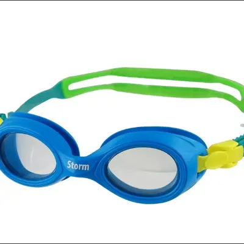

Best Swim Goggles for Kids and Adults
Whether your child is taking their first swim lesson or you're training for a triathlon, the right goggles make all the difference. This guide covers what to look for, common mistakes, and our top picks for every swimmer.
Why Good Swim Goggles Matter
Goggles aren't just about comfort—they're about safety. Children who can see clearly underwater are less likely to panic, more confident during lessons, and better able to develop proper technique.
- Reduces panic: Clear underwater vision helps children feel in control, which is critical during swim lessons.
- Protects eyes: Chlorine and salt water irritate eyes. Goggles prevent redness, stinging, and potential chemical conjunctivitis.
- Builds confidence: Kids who can see where they're going are more willing to put their face in the water—a key milestone in learning to swim.
- UV protection: For outdoor swimming, UV-coated lenses protect against sun damage during long sessions.
- Improves technique: Swimmers who can see the pool bottom and walls develop better spatial awareness and stroke mechanics.
What to Look for in Swim Goggles
Not all goggles are created equal. Here are the key features that separate good goggles from great ones.
Anti-fog coating
The most important feature. Without anti-fog, goggles become useless within minutes. Look for factory-applied coatings. Avoid rubbing the inside of lenses, which strips the coating.
Silicone gasket
Soft silicone creates a watertight seal without painful suction. Cheaper goggles use PVC or hard plastic that can leave marks and leak. Test the fit by pressing goggles to the face without the strap—they should stick briefly.
Easy adjustment
Kids need straps they can adjust themselves. Look for split straps (two bands) for stability and quick-release buckles for easy on/off. The strap should sit at the midpoint of the back of the head.
UV blocking
Essential for outdoor pools, lakes, and ocean swimming. UV400 protection blocks 99-100% of UVA and UVB rays. Indoor-only swimmers can skip this feature.
Polycarbonate lenses
Shatter-resistant and lightweight. Polycarbonate is the industry standard for swim goggles. Avoid glass lenses (heavy, breakable) and cheap plastic (scratches easily).
Age-appropriate fit
Kids' goggles have smaller eye cups and shorter nose bridges. Adult goggles on a child will leak constantly. Most brands offer sizes for ages 2-6, 6-14, and 14+.
Best Swim Goggles for Kids
These picks balance comfort, durability, and anti-fog performance for young swimmers.

Kids Anti-Fog Swim Goggles
Best all-around pick. Silicone gasket, UV protection, and a comfortable fit for ages 3-12.
View on Amazon
Toddler Swim Goggles (Ages 2-5)
Extra-small frame designed for tiny faces. Soft silicone with fun colors kids love.
View on Amazon
Kids Swim Mask (Full Coverage)
Wider field of vision with nose coverage. Great for kids who don't like water on their nose.
View on AmazonBest Swim Goggles for Adults
From casual lap swimming to competitive training and open water—find the right fit.

Adult Lap Swimming Goggles
Low-profile design, anti-fog, UV protection. The go-to choice for pool training.
View on Amazon
Prescription Swim Goggles
Available in standard diopter increments. See clearly without contacts—safer and more comfortable.
View on Amazon
Open Water / Triathlon Goggles
Wider lenses, polarized tint, and enhanced peripheral vision for lakes and ocean swimming.
View on AmazonHow to Care for Your Swim Goggles
A little care goes a long way. Follow these tips to extend the life of your goggles.
Rinse in fresh water
Chlorine and salt degrade silicone gaskets and anti-fog coatings. A quick rinse in cold tap water after each use adds months of life.
Use a protective case
Tossing goggles loose in a swim bag scratches lenses. A small hard case or mesh pouch protects the anti-fog coating and lens surface.
Don't wipe the lenses
Rubbing the inside of lenses strips the anti-fog coating. If fogging occurs, dip goggles in water and shake gently. Replace goggles when anti-fog fails.
Frequently Asked Questions
What are the best swim goggles for kids?
The best swim goggles for kids feature anti-fog lenses, UV protection, a soft silicone gasket for comfort, and an adjustable strap. Look for goggles specifically designed for smaller faces to ensure a proper seal.
Do I need prescription swim goggles?
If you wear glasses or contacts with a prescription stronger than -1.5, prescription swim goggles can significantly improve your underwater visibility and safety. They're available in standard diopter increments and are much safer than wearing contacts while swimming.
How do I prevent swim goggles from fogging?
Choose goggles with anti-fog coating, avoid touching the inside of the lenses, rinse in fresh water after each use, and replace them when the anti-fog coating wears off (typically every 6-12 months of regular use).
More Water Safety Resources
Swim Caps Guide
Silicone vs. latex, caps for long hair, and how to protect hair from chlorine damage.
Pool Safety Checklist
The complete checklist every pool-owning family needs. Fences, alarms, and rules.
Find Swim Lessons
Search 1,245+ swim lesson providers across all 50 states. Free and low-cost options available.
FloatSwim is a participant in the Amazon Associates Program. Some links earn a small commission at no extra cost to you.